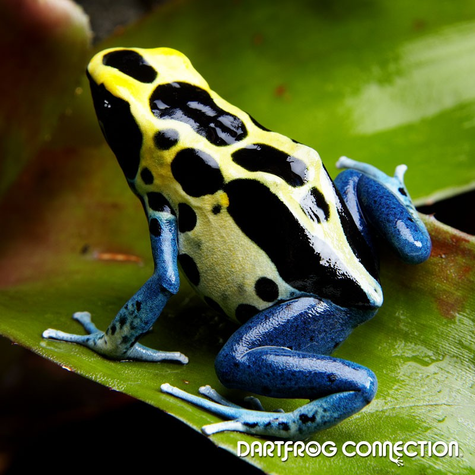
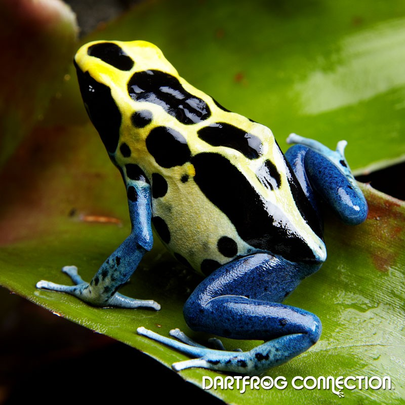

Poison dart frogs are native to tropical Central and South America
"Poison dart frog" is the common name of a group of frogs in the family Dendrobatidae
Some species of the Dendrobatidae family exhibit extremely bright coloration along with high toxicity, while others have cryptic coloration with minimal to no amount of observed toxicity.
The species that have great toxicity have a diet rich in ants, mites and termites
These amphibians are often called "dart frogs" due to the Amerindians' indigenous use of their toxic secretions to poison the tips of blowdarts
Most species of poison dart frogs are small, sometimes less than 1.5 cm (0.59 in) in adult length, although a few grow up to 6 cm (2.4 in) in length
Many poison dart frogs in the genera Oophaga and Ranitomeya carry their newly hatched tadpoles into the canopy
The operational sex ratio in the poison dart frog family is mostly female biased
Some poison dart frogs species include a number of conspecific color morphs that emerged as recently as 6,000 years ago
Many poison dart frogs secrete lipophilic alkaloid toxins such as allopumiliotoxin 267A, batrachotoxin, epibatidine, histrionicotoxin, and pumiliotoxin 251D through their skin
Despite the toxins used by some poison dart frogs, some predators have developed the ability to withstand them. One is the snake Leimadophis epinephelus, which has developed immunity to the poison
Skin toxicity evolved alongside bright coloration, perhaps preceding it
Conspicuousness and toxicity may be inversely related, as polymorphic poison dart frogs that are less conspicuous are more toxic than the brightest and most conspicuous species